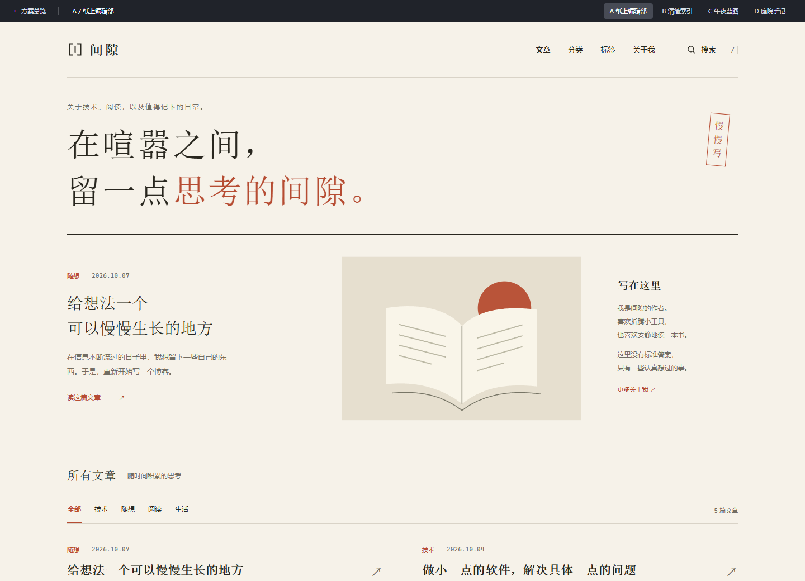
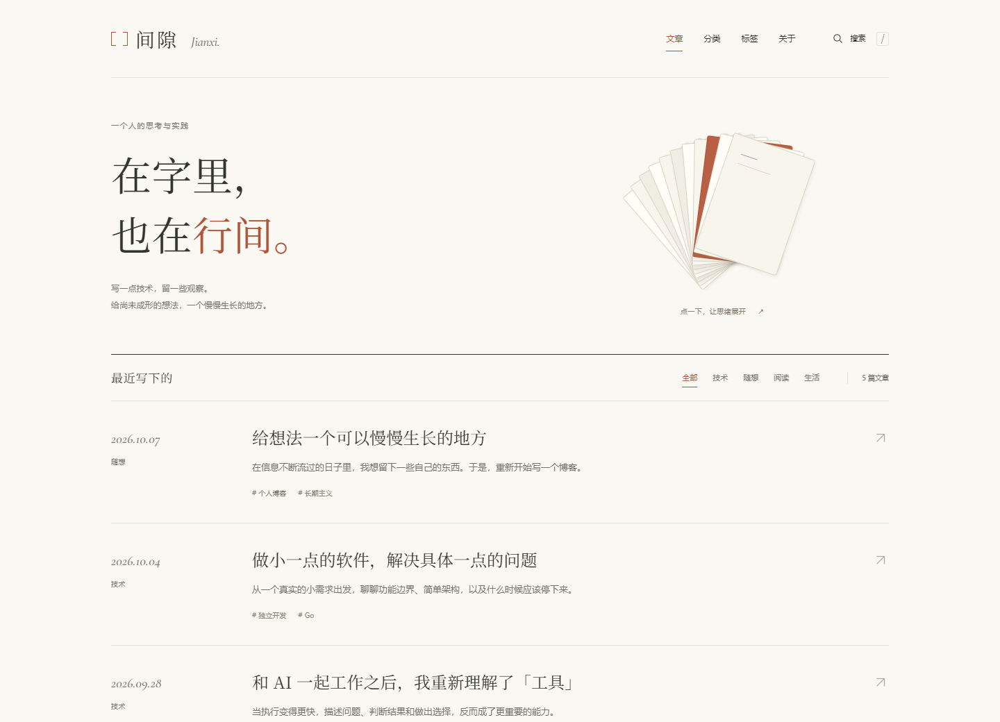

新增「留白之间」，沿你喜欢的方向继续打磨。
你的博客，
可以有自己的样子。
先选一种读起来舒服的气质，再慢慢打磨细节。

从你喜欢的气质，发展自己的表达
E / 留白之间
暖白与墨色、疏朗的中文排版、一笔陶土红。以「间隙」为线索，设计可以展开的纸页装置、括号标识，以及轻巧的标题和页面过渡。
体验新方案与动效 ↗查看文章阅读页 ↗气质参考：CGArtLab；页面构图、标识和交互为独立设计。从阅读习惯出发，选一个方向。
| 方案 | 核心气质 | 更适合的内容 | 设计取舍 |
|---|---|---|---|
| A 纸上编辑部 | 沉静、有书卷气 | 长文、随笔、阅读记录 | 中文宋体最有辨识度，列表较舒展 |
| B 清简索引 | 清晰、克制 | 技术笔记、知识整理 | 查找效率高，装饰更少 |
| C 午夜蓝图 | 专注、理性 | 开发实践、AI 与工具探索 | 夜间阅读友好，固定深色方案 |
| D 庭院手记 | 温和、松弛 | 技术与生活混合的个人表达 | 亲近感强，视觉节奏更轻松 |